This model can be extended to accommodate partition of variance between- and within- participants:
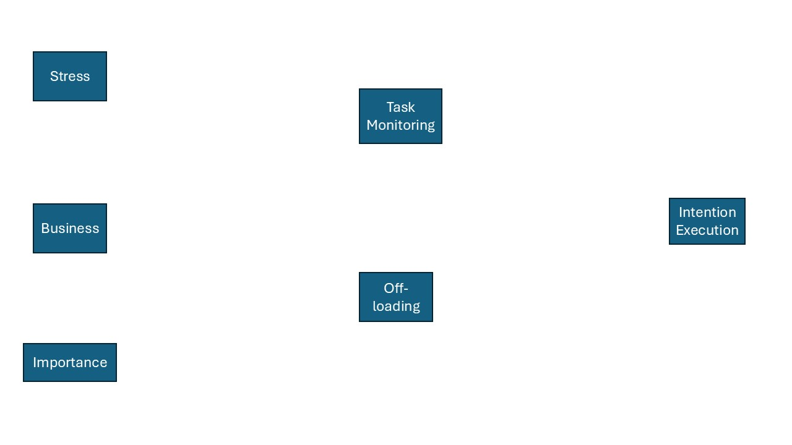
Extended hypothesised path model
Within-between partitioning
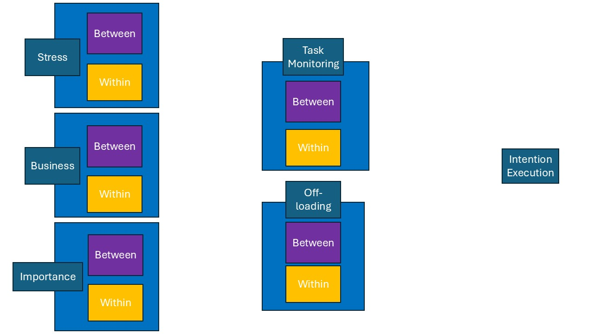
Extended hypothesised path model
Effect of stress
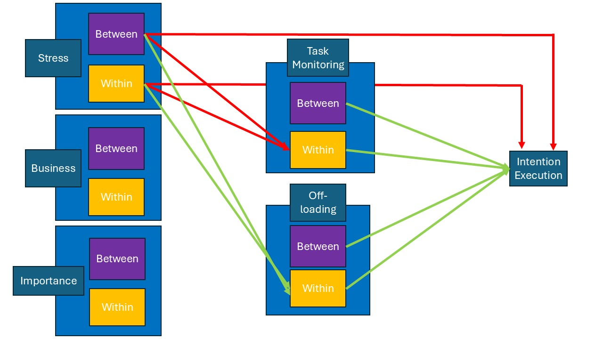
Extended hypothesised path model
Effect of business
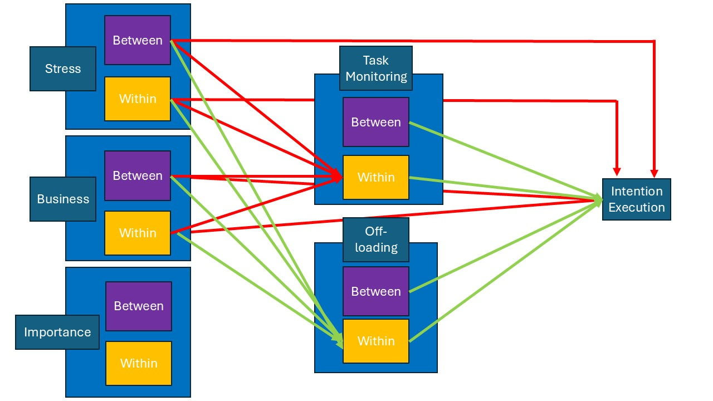
Extended hypothesised path model
Effect of Importance
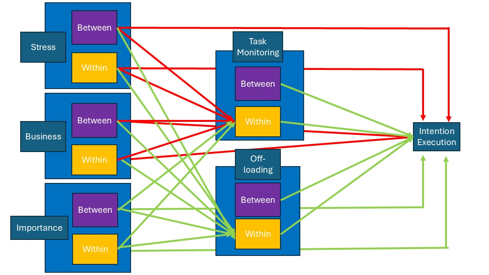
Extended hypothesised path model
Code
# Import the data#| include: false#| message: false#| warning: false#| echo: falsecd<-getwd()# file dirfile_dir<-"Originaldatensätze/R-Skript"# young adults' datasetYA_df<-read_spss(paste0(file_dir, "/ExpSamp_jungErw2.sav"))# rename the age groupYA_df$agegroup<-"YA"# check task_monitoringhist(YA_df$esm_day_task_monitoring)
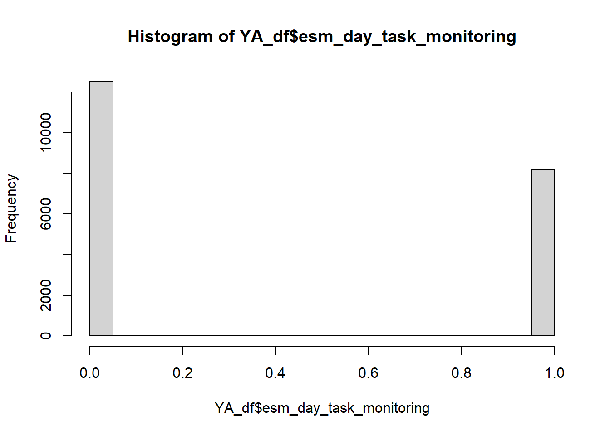
Code
# middle-aged adultsMAA_df<-read_spss(paste0(file_dir, "/ExpSamp_mittlErw.sav"))# rename the age groupMAA_df$agegroup<-"MAA"# check task_monitoringhist(YA_df$esm_day_task_monitoring)# combine the twoall_df<-rbind(YA_df, MAA_df)
Participants
Code
all_df %>%distinct(ID, agegroup) %>%count(agegroup, name ="n_participants") %>%gt() %>%tab_header(title ="Participants by age group" )
Participants by age group
agegroup
n_participants
MAA
103
YA
107
Code
# check the length of unique IDslength(unique(all_df$ID))
The dataset as it is now is good to test hypotheses on the variables that vary within day, e.g. stress, business, monitoring.
Reshape the dataset so there is only one unique intention per day, which is our base level.
RTeshaped dataset
`summarise()` has regrouped the output.
ℹ Summaries were computed grouped by ID and day.
ℹ Output is grouped by ID.
ℹ Use `summarise(.groups = "drop_last")` to silence this message.
ℹ Use `summarise(.by = c(ID, day))` for per-operation grouping
(`?dplyr::dplyr_by`) instead.
df_selected<-df_selected[, c("within_stress", "within_importance", "within_business", "within_off_loading", "within_task_monitoring", "esm_evening_intention_execution", "esm_day_task_monitoring", "esm_evening_off_loading_r")]# Convert to long formatdf_long <- df_selected %>%pivot_longer(cols =everything(), names_to ="Variable", values_to ="Value")# Plot all histograms in one go using facetsggplot(df_long, aes(x = Value)) +geom_histogram(bins =30, fill ="grey70", color ="black") +facet_wrap(~ Variable, scales ="free") +theme_classic()
Warning: Removed 1994 rows containing non-finite outside the scale range
(`stat_bin()`).
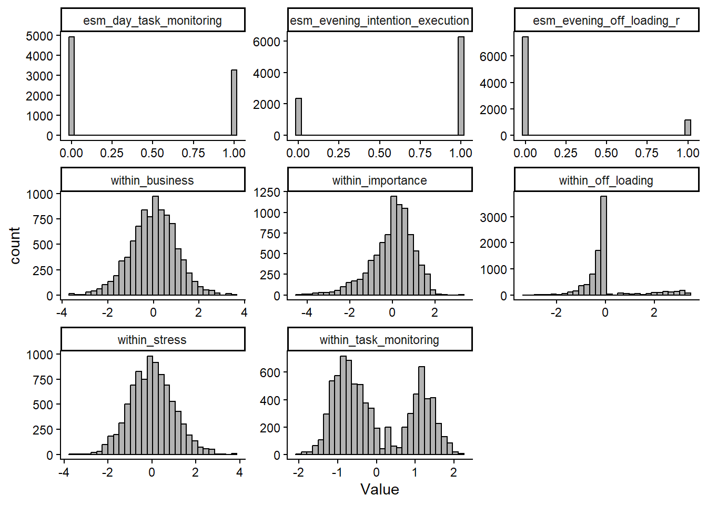
Check the intraclass correlation coefficient (ICC)
Code
PM_YA <-glmer(esm_evening_intention_execution ~1+ (1| ID), data = stress_int[stress_int$agegroup=="YA",], family = binomial)PM_MAA <-glmer(esm_evening_intention_execution ~1+ (1| ID), data = stress_int[stress_int$agegroup=="MAA",], family = binomial)print("ICC PM YA:")
[1] "ICC PM YA:"
Code
icc_YA<-icc(PM_YA)icc_YA$ICC_adjusted
[1] 0.133221
Code
print("ICC PM MAA:")
[1] "ICC PM MAA:"
Code
icc_MAA<-icc(PM_MAA)icc_MAA$ICC_adjusted
[1] 0.1889963
Test the effect of day on intention execution
esm_evening_intention_execution
Predictors
Odds Ratios
CI
p
(Intercept)
2.93
2.65 – 3.25
<0.001
day c
1.02
1.00 – 1.03
0.033
agegroup c
1.47
1.20 – 1.79
<0.001
day c × agegroup c
0.99
0.97 – 1.02
0.533
Random Effects
σ2
3.29
τ00ID
0.42
τ11ID.day.c
0.00
ρ01ID
0.07
ICC
0.12
N ID
210
Observations
8625
Marginal R2 / Conditional R2
0.011 / 0.127
Do people become more stressed as the go on with the study?
Code
stress_time_model<-lmer(esm_day_stress_avg ~ day.c*agegroup.c + (day.c|ID), data = stress_int_red, control=lmerControl(optimizer="bobyqa",optCtrl=list(maxfun=100000)) )tab_model(stress_time_model)
esm_day_stress_avg
Predictors
Estimates
CI
p
(Intercept)
2.44
2.37 – 2.52
<0.001
day c
0.01
0.01 – 0.02
0.001
agegroup c
-0.01
-0.16 – 0.14
0.867
day c × agegroup c
-0.01
-0.02 – 0.01
0.288
Random Effects
σ2
0.35
τ00ID
0.29
τ11ID.day.c
0.00
ρ01ID
0.03
ICC
0.49
N ID
210
Observations
8621
Marginal R2 / Conditional R2
0.004 / 0.492
Conditional effects of variables on PM
Test the conditional effects of the variables on PM
Code
# predict PM by all the predictorsPM_model<-glmer(esm_evening_intention_execution ~# within factors within_off_loading+ within_importance + within_task_monitoring+ within_business+ within_stress+# between factors between_off_loading+ between_importance+ between_task_monitoring+ between_business+ between_stress+# age agegroup.c +# day number as covariate day.c+# random effects (1 within_off_loading+ within_importance + within_task_monitoring+within_business+day.c| ID),data = stress_int_red, family = binomial,control=glmerControl(optimizer="bobyqa",optCtrl=list(maxfun=100000)) )
Results
SEM - path model. Generalized linear-mixed effect path model - bayesian estimation
Code
# first, we predict PM from all the predictorsPM_model <-bf(esm_evening_intention_execution ~# fixed effects within_stress*agegroup.c + within_importance*agegroup.c + within_task_monitoring*agegroup.c + within_off_loading*agegroup.c + within_business*agegroup.c+ between_stress*agegroup.c + between_task_monitoring*agegroup.c + between_off_loading*agegroup.c + between_importance*agegroup.c+ between_business*agegroup.c+day.c+ (1+ within_stress + within_business+ within_importance + within_task_monitoring + within_off_loading || ID), # random intercepts and slopesfamily =bernoulli()) # we have a binary outcome# predicting monitoring from stress and importancemonitoring_model<-bf(esm_day_task_monitoring ~ within_stress*agegroup.c + within_importance*agegroup.c + within_business*agegroup.c+ between_stress*agegroup.c+ between_importance*agegroup.c+ between_business+day.c+ (1+within_stress+ within_business+ within_importance+ day.c||ID), family =bernoulli()) # mixture# predicing off_loading from stress and imortanceoffloading_model<-bf(esm_evening_off_loading_r ~ within_stress*agegroup.c + within_importance*agegroup.c+ within_business*agegroup.c+ between_stress*agegroup.c+ between_importance*agegroup.c+ between_business*agegroup.c+ day.c+ (1+within_stress+ within_importance+ within_business+ day.c||ID), family =bernoulli() )## set weakly informative priorspriors <-c(# Fixed effects: assume standardized predictorsprior(normal(0, 0.5), class ="b", resp ="esmeveningintentionexecution"), prior(normal(0, 0.5), class ="b", resp ="esmdaytaskmonitoring"), prior(normal(0, 0.5), class ="b", resp ="esmeveningoffloadingr") # all the rest is left as defauls# # # SD of random effects (hierarchical structure)# prior( student_t(3, 0, 2.5) , class = "sd", resp = "esmeveningintentionexecution"),# prior(student_t(3, 0, 2.5) , class = "sd", resp = "esmdaytaskmonitoring"),# prior(student_t(3, 0, 2.5), class = "sd", resp = "esmeveningoffloadingr"),# ## # Correlation priors among random effects# # prior(lkj(2), class = "cor"), # same across responses# # # Residual SDs for continuous outcomes# prior(exponential(1), class = "sigma", resp = "esmdaytaskmonitoring"),# prior(exponential(1), class = "sigma", resp = "esmeveningoffloadingr"))# fit thestress_int_red# fit the modelfit1 <-brm( PM_model+ monitoring_model + offloading_model +set_rescor(F), prior = priors,sample_prior ="yes",data = stress_int_red,chains =4, cores =4,iter =2000, warmup =1000#,backend = "cmdstanr" )
Posterior summary
Path model results
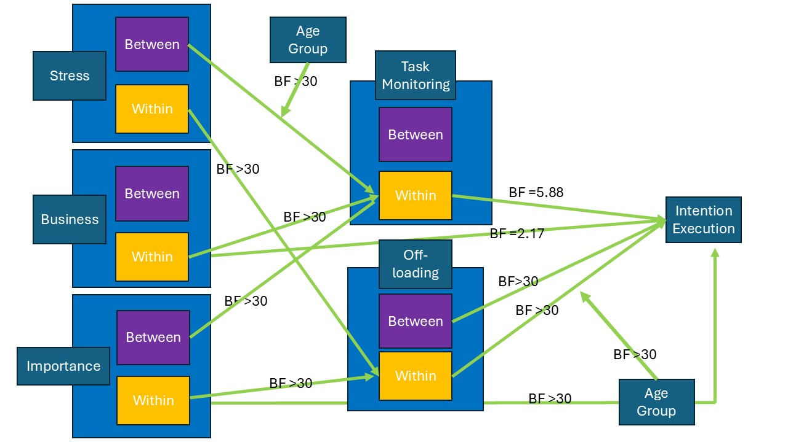
Extended hypothesised path model
Moderation of Age group on between stress-within task monitoring path
interact_plot(int_mod_stress_mon, pred = esm_day_stress, modx = agegroup)
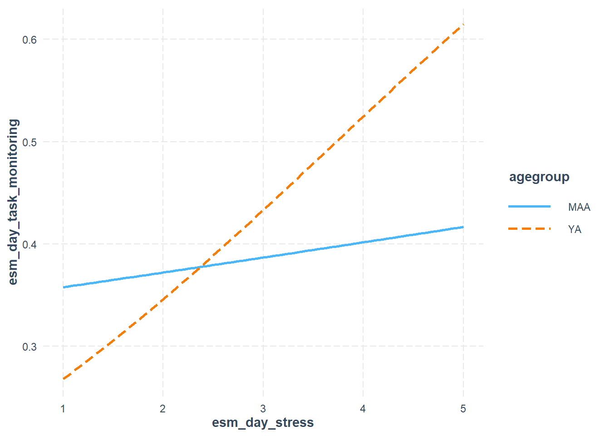
Code
ggplot(stress_int_red, aes( x=esm_day_stress, y=esm_day_task_monitoring))+# add the "smooth" line, which the regression method ('l,')# and trasparent (0.5)geom_line(stat="smooth",method ="glm", formula=y~x, alpha=0.5, se=F)+# specify that we want different colours for different participantsaes(colour =factor(ID))+# add the summary line with geom_smoothgeom_smooth(method="lm",formula=y~x, se=T, colour ="black" )+theme(strip.text.x =element_text(size =13))+theme_classic()+theme(panel.spacing =unit(1, "lines"))+facet_wrap(.~agegroup)+#ggtitle("Experiment 2")+theme(legend.position ="none")
Warning: Removed 635 rows containing non-finite outside the scale range
(`stat_smooth()`).
Removed 635 rows containing non-finite outside the scale range
(`stat_smooth()`).
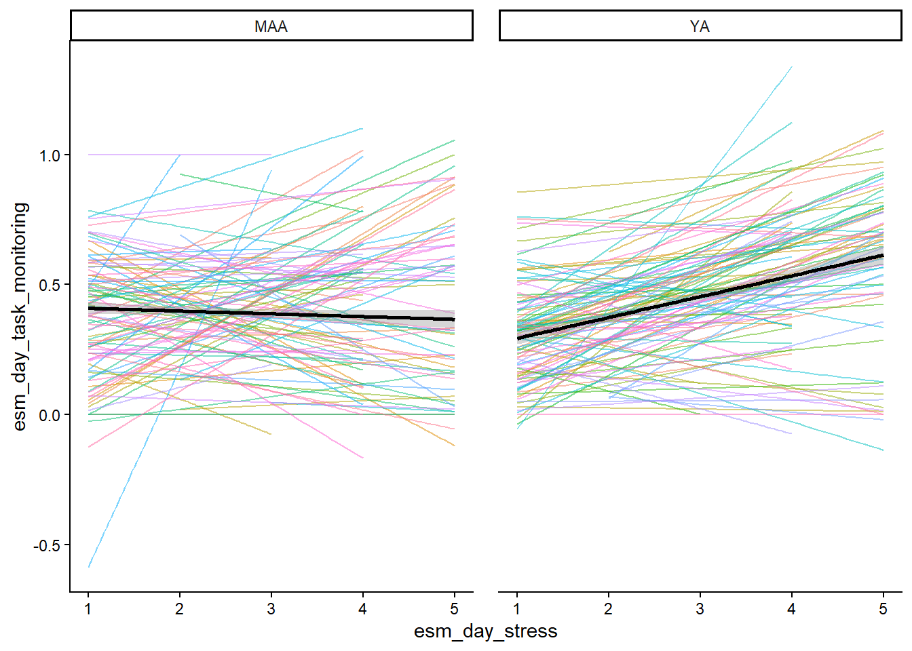
Plot moderation of Age group on between stress-within task monitoring path
Code
interact_plot(int_mod_stess_mon, pred = between_stress, modx = agegroup)
Hypothesis Tests for class b:
Hypothesis Estimate Est.Error CI.Lower CI.Upper Evid.Ratio
1 (esmeveningintent... = 0 0.02 0.01 0.01 0.03 0.18
Post.Prob Star
1 0.15 *
---
'CI': 90%-CI for one-sided and 95%-CI for two-sided hypotheses.
'*': For one-sided hypotheses, the posterior probability exceeds 95%;
for two-sided hypotheses, the value tested against lies outside the 95%-CI.
Posterior probabilities of point hypotheses assume equal prior probabilities.
Code
print(paste0("Bayes Factor for ", "h_mediation"," is ", 1/h_business_monitoring$hypothesis$Evid.Ratio))
[1] "Bayes Factor for h_mediation is 5.53729940133829"
Test moderated mediation - Age as moderator, off-loading as a mediator
Code
h_moderated_mediation<-hypothesis(fit1, c("esmeveningintentionexecution_agegroup.c:within_off_loading* esmeveningoffloadingr_within_importance = 0" ))BF_moderated_med<-1/h_moderated_mediation$hypothesis$Evid.Ratioprint(paste0("Bayes Factor for ", "h_moderated_mediation"," is ", 1/h_moderated_mediation$hypothesis$Evid.Ratio))
Moderation model
Generalized linear mixed model fit by maximum likelihood (Laplace
Approximation) [glmerMod]
Family: binomial ( logit )
Formula: esm_evening_intention_execution ~ within_off_loading * agegroup +
(within_off_loading | ID)
Data: stress_int_red
AIC BIC logLik -2*log(L) df.resid
9571.4 9620.9 -4778.7 9557.4 8619
Scaled residuals:
Min 1Q Median 3Q Max
-3.6160 -0.9707 0.4621 0.6220 2.0074
Random effects:
Groups Name Variance Std.Dev. Corr
ID (Intercept) 0.43320 0.6582
within_off_loading 0.06023 0.2454 -0.42
Number of obs: 8626, groups: ID, 210
Fixed effects:
Estimate Std. Error z value Pr(>|z|)
(Intercept) 1.29016 0.07643 16.881 < 2e-16 ***
within_off_loading 0.23165 0.05461 4.242 2.22e-05 ***
agegroupYA -0.34822 0.10548 -3.301 0.000963 ***
within_off_loading:agegroupYA 0.33694 0.08180 4.119 3.81e-05 ***
---
Signif. codes: 0 '***' 0.001 '**' 0.01 '*' 0.05 '.' 0.1 ' ' 1
Correlation of Fixed Effects:
(Intr) wthn__ aggrYA
wthn_ff_ldn -0.084
agegroupYA -0.714 0.081
wthn_ff_:YA 0.080 -0.606 -0.068
Plot moderation
Code
interact_plot(int_mod, pred = within_off_loading, modx = agegroup)
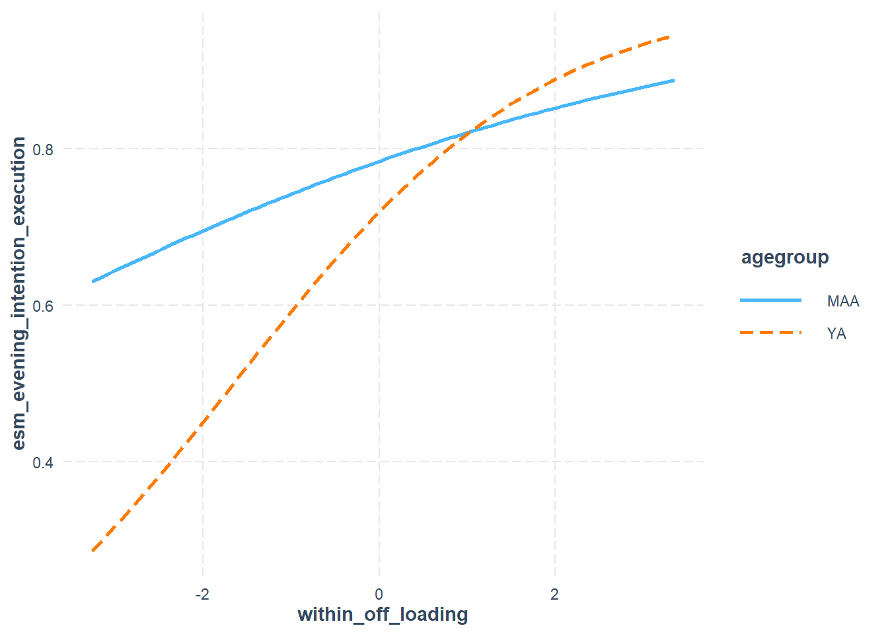
Code
# # get the posterrior samples# draws<-posterior_samples(fit1)# # # Compute indirect effect manually# draws$indirect <- draws$b_withinoffloading_within_importance * # path a - M~A# draws$b_esmeveningintentionexecution_within_off_loading # path b - Y~M# # plot distribution# ggplot(draws, aes(x = indirect))+# geom_histogram()+# theme_classic()+# gg_title("posterior distribution indirect effect of intention on PM")#indirect_bf <- bayesfactor_parameters(draws$indirect)#plot(bayesfactor_parameters(draws$indirect))# draws$indirect2 <- draws$b_withintaskmonitoring_within_business* draws$b_esmeveningintentionexecution_within_task_monitoring # # # hist(draws$indirect)# # hist(draws$indirect2)# # # simple slope analysis for the interaction between age group and within task monitoring# slope_MA <- draws$b_esmeveningintentionexecution_within_off_loading +# draws$`b_esmeveningintentionexecution_agegroup.c:within_off_loading` * 0.5# slope_YA <- draws$b_esmeveningintentionexecution_within_off_loading +# draws$`b_esmeveningintentionexecution_agegroup.c:within_off_loading` -0.5+0.5# # describe_posterior(slope_MA)# describe_posterior(slope_YA)# # conditional_effects(fit1, "within_off_loading", resp = "esmeveningintentionexecution")# # ce <- conditional_effects(fit1, effects = "within_off_loading:agegroup.c",# conditions = data.frame(agegroup.c = c(-0., 0.52)))# # plot(ce)# stronger in young adults than in middle aged adults
Posterior predictive check
PPC constructs the posterior distribution over the parameters and simulate their distribution - if it approximates the distribution of observed data, the model is a good fit